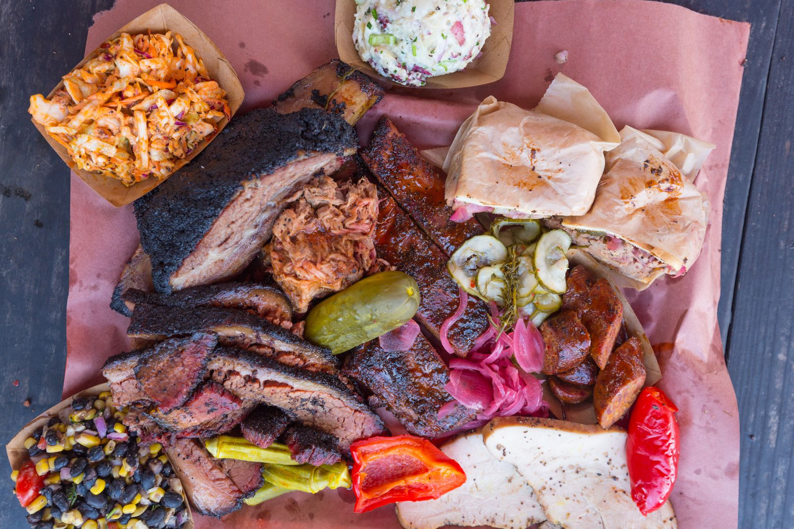

Regional Barbecue
in America
/////////Choose a region to learn more about its barbecue/////////
×
▲
▼
×
Meat, smoke and (sometimes) sauce are the only necessary ingredients for American barbecue. But variations by region have spawned longheld rivlaries of who's got the best 'cue, and there often isn't a clear answer. This guide can't answer that question.
Rather, it will provide a breakdown of American regional barbecue from the form closest to the cuisine's origins in the Carribean to obscure regional specialties.
Perhaps it's One of Texas' four varieties, or one of the smaller regions in the Carolinas. Maybe the plurality of styles is what makes American barbecue special, and each variation is as valid as the next. That's for you to decide.
A staple cuisine of the South, barbecue has variations out west, too. Very west. All the way to Hawaii, in fact. Though these styles may not draw on southern roots and Carribean ancestry, their similarities in process and product mandate their inclusion on the map. Poke around the regions below, explore their styles, and find your favorite or learn something new. But try not to get too hungry.
×
▲
▼
×